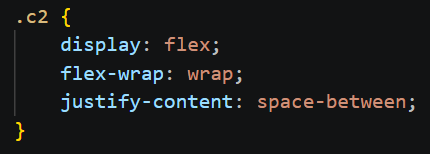
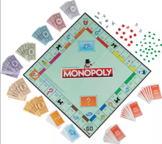
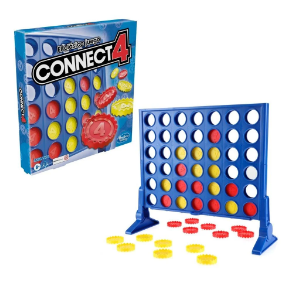
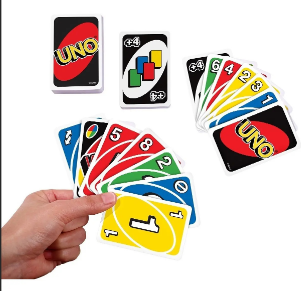
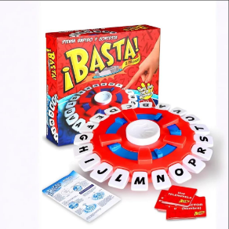
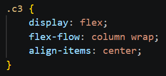

La Isla Siniestra

Vista el 30 de enero de 2026
Vista el 30 de enero de 2026

Vista el 2 de febrero de 2026

Vista el 8 de febrero de 2026

Artista: Harry Styles
Siempre va a ser mi canción favorita
Artista: Siddhartha
Recientemente escuche esta cancion en vivo y fue una bonita experiencia
Artista: Humbe
Hace poco que escuche esta cancion y me gusta mucho porque es tranquila y me gusta el significado que tiene la letra
Artista: NSQK
Esta cancion, por otro lado es muy movida y me pone de buen humor escucharla


Este juego es divertido porque si se juega bien, se puede extender por horas

Me gusta este juego porque es rapido y facil de entender

Este juego yo creo que es mi favorito, porque se puede jugar de muchas maneras y con muchas reglas

En este juego se trata mucho de pensar y ser creativo con tus respuestas
